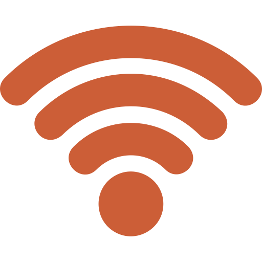

Волонтёрские узлы
Серверы предоставляют университеты, хакспейсы и частные лица. Любой узел можно подключить или отключить без простоя сети.
UPLINK: ONLINE
--:--:--
> whoami // некоммерческий проект с 2024 года
NODE//COMMONS — волонтёрская сеть серверов, которая бесплатно раздаёт дистрибутивы Linux, пакеты и исходный код открытых проектов. Никакой рекламы, трекинга и платных тарифов: только быстрые и проверяемые загрузки, поддерживаемые сообществом.
Кликните в область консоли на вкладке MAIN SHELL и введите команду. Доступно:
| Команда | Описание |
|---|---|
| help | Список команд |
| about | Коротко о проекте |
| status | Сводка по узлам сети |
| docs | Перейти к документации |
| join | Как подключить свой сервер |
| neofetch | Информация о браузере |
| date, whoami, echo | Классика |
| sfx on / sfx off | Звуки интерфейса |
| reboot | Показать анимацию загрузки ещё раз |
| clear | Очистить экран |
Клавиши ↑ / ↓ листают историю, Tab дополняет команду.
Мы — небольшое сообщество системных администраторов, студентов и энтузиастов. Каждый участник выделяет часть ресурсов своего сервера, чтобы свободное ПО скачивалось быстро и надёжно в любой точке региона.
Проект не имеет коммерческой цели: мы не продаём трафик, не показываем рекламу и не собираем данные пользователей. Инфраструктура описана в открытом репозитории, а любой желающий может проверить, как она устроена, и предложить улучшения.
0
0
0
0
Серверы предоставляют университеты, хакспейсы и частные лица. Любой узел можно подключить или отключить без простоя сети.
Никаких счётчиков, cookie-баннеров и сторонних скриптов. Логи хранятся только в агрегированном виде и удаляются через 7 дней.
Каждая синхронизация сверяет контрольные суммы и подписи с апстримом. Повреждённый файл никогда не попадёт к пользователю.

0x04Запрос автоматически уходит на ближайший живой узел. Если сервер недоступен, балансировщик переключает трафик за секунды.
Конфигурации, скрипты синхронизации и этот сайт опубликованы под GPL-3.0. Форкайте, проверяйте, присылайте pull request’ы.
Расходы на домен и мониторинг покрываются небольшими пожертвованиями участников. Отчёт о каждой потраченной копейке — публичный.
> Нажмите на клавишу, чтобы прочитать принцип.
-/-
-- ms
-- Gb/s
99.97%
| Узел | Локация | Статус | Ping | Нагрузка | Трафик | Синхр. | Аптайм |
|---|
 Демонстрационная телеметрия: значения генерируются в браузере. Подключите собственный
API мониторинга, заменив функцию
Демонстрационная телеметрия: значения генерируются в браузере. Подключите собственный
API мониторинга, заменив функцию tickTelemetry() в js/ui-effects.js.
Нажмите на файл, чтобы открыть его.
deb https://mirror.commons.example/debian bookworm main
deb https://mirror.commons.example/debian-security bookworm-security maincurl -O https://mirror.commons.example/iso/distro.iso
curl -O https://mirror.commons.example/iso/SHA256SUMS
sha256sum -c SHA256SUMS --ignore-missingНужен сервер с 2 ТБ свободного места и стабильным каналом. Вся настройка занимает около часа.